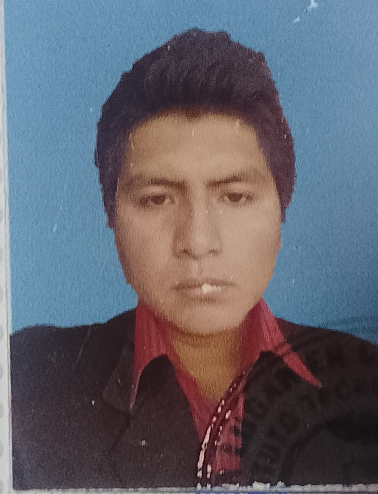

CURRICULUM VITAE
DATOS PERSONALES
Nombre y Apellidos: Ronald Alberto Fuertes Lero
Fecha de nacimiento: 26/12/1993
Nacionalidad: Boliviano
Domicilio:Potosi Zona Villa santiago calle final molina s/n
Teléfono: 78620635
Dirección: potosi, Bolivia
Email: fuerteslero@gmail.com
Idiomas: Castellano - Quechua(nivel Basico)
FORMACION ACADEMICA
Superior : INSTITUTO TECNICO SAN MARTIN
: Técnico Medio Informático
potosí, Bolivia
Universidad Autónoma “Tomas Frías”
Administración De Empresas; (hasta sexto semestre)
Superior Secundaria: Colegio “Juan Manuel Calero”
Potosí, Bolivia 2008 – 2011
Primaria: Escuela “Luis Felipe manzano”
Experiencia Laboral
- Diciembre de 2023 a la fecha conductor
- 2023 practicas laborales en "viceminiterio de Defenza Civil"
- 2022 en empresa minera "chaskas srl"
- 2021 trabajo en libreria
- 2020 trabajo en taller de soldadura
HABILIDADES
Gestion de Archivos
Atencion al Cliente
Diseño grafico
Gestion de Almacen
CERTIFICADOS ADQUIRIDOS
- Titulo en provisión técnico medio en sistemas informáticos.
- Diploma Académico de Técnico informático
- Diploma de Bachiller en Humanidades.
ASISTENCIA A CURSOS ADQUIRIDOS
- Computación en todos los ambientes de Windows
Como ser; Word, Excel, Power Point, diseño grafico.
- cursos; “crisis en la administración pública del estado plurinacional de Bolivia” y “pacto fiscal” 2018.
- VI congreso internacional de ciencias económicas,
comerciales y financieras Cochabamba mayo 2019.
- tribulan electoral departamental de Potosí “Democracia intercultural y paritaria” potosí 2018>
- Curso de “comercio exterior e importaciones “diciembre 2018>